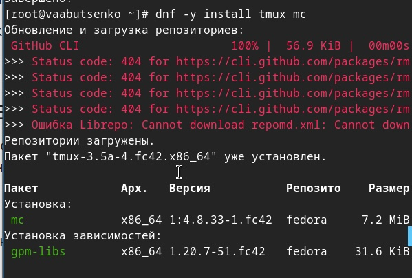
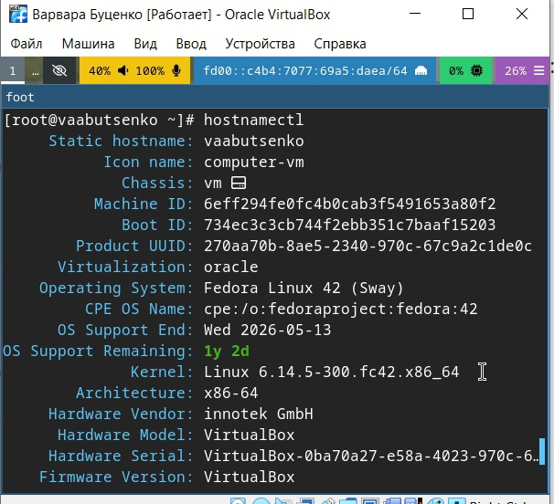
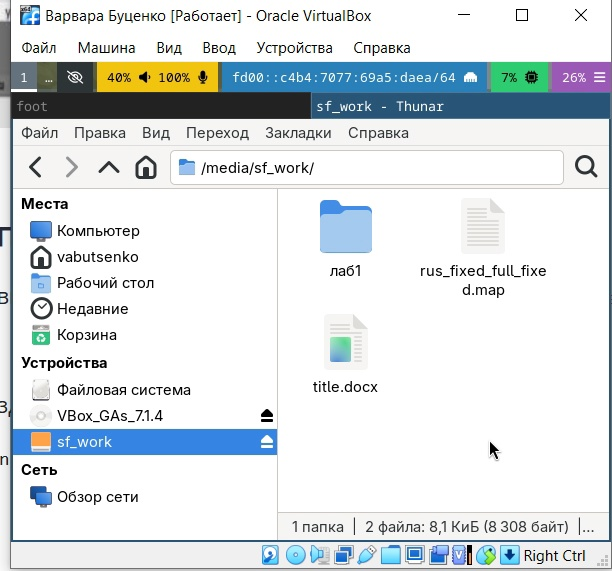
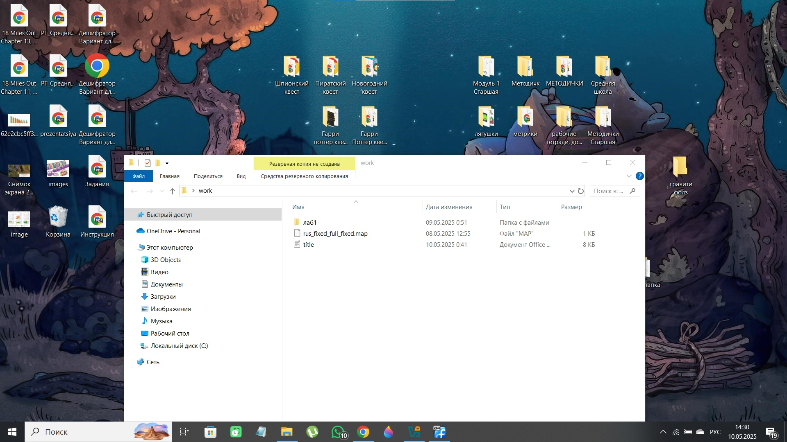
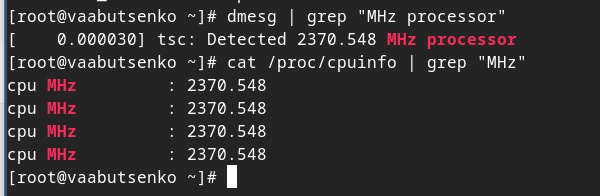
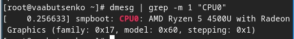
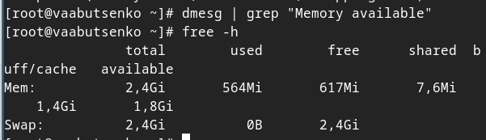
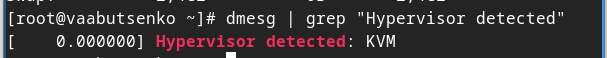
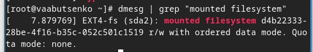
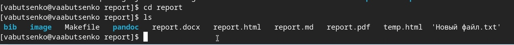

Информация
Докладчик
Вводная часть
Выполнение лабораторной
работы
- Необходимо создать виртуальную машину.
- Установить операционную систему Linux.
- Установить систему на диск.
- Переключиться на роль супер пользователя и обновить все пакеты, а
такжеустановить программы для удобства работы в консоли.
- Установить имя пользователя и название хоста.
- Подключить общую папку.
- Установить программное обеспечение для создания документации.
- Установить средство pandoc для работы с языком разметки
Merkdown.
- Установить дистрибутив TexLive.
- После создания и настройки виртуальной машины, дождаться загрузки
графического окружения и открыть терминал. В окне терминала
проанализировать последовательность загрузки системы, выполнив команду
dmesg.
Выполнение лабораторной
работы
- Создаю виртуальную машину и настраиваю её: устанавливаю операционную
систему, устанавливаю систему на диск. После этого захожу в ОС под
заданной мною при установке учётной записью (рис.1).
.jpg)
Выполнение лабораторной
работы
- Переключаюсь на роль супер-пользователя (sudo -i), обновляю все
пакеты (dnf -y update)

Выполнение лабораторной
работы
- Устанавливаю программы для удобства работы консоли (dnf -y install
tmux mc)
 
Выполнение лабораторной
работы
- Устанавливаю имя пользователя и название хоста. Команду я уже
выполняла заранее, поэтому на скриншотах представлен вывод.

Выполнение лабораторной
работы
- Подключаю общую папку, использую (gpasswd -a vabutsenko vboxsf), в
хостовой системе подключаю разделяемую папку.
 
Выполнение лабораторной
работы
- Устанавливаю программное обеспечение для создания документации (sudo
-y install pandoc).

Выполнение лабораторной
работы
- Установить дистрибутив TeXlive (dnf -y install
texlive-scheme-full).

Выполнение лабораторной
работы
- С помощью команды (dmesg | grep “Linux version”) я смогла получить
версию ядра Linux.

Выполнение лабораторной
работы
С помощью команды (dmesg | grep “MHz processor”) смогла получить
частот процессора.

Выполнение лабораторной
работы
С помощью команды (dmesg | grep -m 1 “CPU0”) смогла получить модель
процессора.

Выполнение лабораторной
работы
С помощью команды (dmesg | grep “Memory available”) смогла получить
объём доступной опертивной памяти.

Выполнение лабораторной
работы
С помощью команды (dmesg | grep “Hypervisor detected”) смогла
получить тип обнаруженного гипервизора

Выполнение лабораторной
работы
С помощью команды (dmesg | grep “mounted filesystem”) смогла получить
тип файловой системы

Выполнение лабораторной
работы
С помощью команды (dmesg | grep “mount”) смогла получить
последовательность монтирования.
Контрольные вопросы
- Какую информацию содержит учётная запись пользователя?
Учётная запись пользователя содержит логин, user ID, домашний
каталог, оболочку, хэш пароля, группы пользователя.
Контрольные вопросы
- Укажите команды терминала и приведите примеры:
- для полечения справки по команде;
- man команда
- команда –help

Контрольные вопросы
- для перемещения по файловой системе;
- pwd (текущий каталог)
- cd путь (перейти в указанный каталог)

Контрольные вопросы
- для просмотра содержимого каталога;
- ls (список файлов и каталогов) ls -l (подробный список)
- ls -a (скрытые файлы)

Контрольные вопросы
- для определения объёма калатога;
- du -sh путь (размер каталога)
- su -sh * (размер всех элементов в текущем каталоге)

Контрольные вопросы
- для создания/удаления каталогов/файлов;
- mkdir каталог (создать каталог)
- touch файл (создать пустой файл)
- rm файл (удалить файл)
- rm -r каталог (удалить каталог рекурсивно)

Контрольные вопросы
Для задания определённых прав на файл/каталог;
- chmod файл (изменить права)
- chmod ures:group файл (изменить владельца и группу)

Контрольные вопросы
для просмотра истории команд. history (показать все выполненные
команды)

Контрольные вопросы
- Что такое файловая система? Приведите примеры с краткой
характеристикой.
Файловая система - это способ организации, хранения и управления
данными на носителях. Она определяет, как файлы и каталоги
структурированы, как хранятся метаданные, как обеспечить доступ к
данным.
Linux | ext4 (Four Extended Filesystem):
Стандарт для большинства дистрибутивов Linux
Поддержка журналирования (защита от сбоев)
Максимальный размер файла: 16 ТБ, раздела: 1ЭБ
(эксабайт)
Windows | NTFS (New Technology FIle System):
Поддержка прав доступа, шифрование (EFS), сжатия
Максимальный размер файла: 256 ТБ
Контрольные вопросы
- Как посмотреть, какие файловые системы подмонтированы в ОС?
В Linux с помощью терминала командой mount (список всех подключённых
файловых систем).
5) Как удалить зависший
процесс?
- Как удалить зависший процесс?
- Можно использовать сочетание клавиш ctrl + c | win + c (прерывает
текущий процесс в терминале). Или приостановить процесс с помощью ctrl +
z | win + z, а затем ввести команду, удаляющую процесс.
- jobs (показать приостановленные процессы) kill -9 %1 (убить процесс
с номером 1)
Выводы
- В ходе выполнения лабораторной работы были успешно выполнены все
поставленные задачи, связанные с установкой и настройкой операционной
системы Linux на виртуальную машину. В процессе работы были приобретены
практические навыки,которые включали:
- Создание и настройку виртуальной машины, включая установку
операционной системы Linux и её конфигурацию.
- Управление пакетами и обновлениями через команды dnf.
- Настройку пользовательского окружения, включая установку имени
пользователя, хоста и подключение общей папки для удобного обмена
данными между хостовой и гостевой системами.
- Установку инструментов для работы с документацией, таких как pandoc
и TeXlive.
Выводы
- Анализ загрузки системы с помощью команды dmesg.
- Приобретённые навыки будут полезны для дальнейшего изучения
операционных систем и их практического применения.